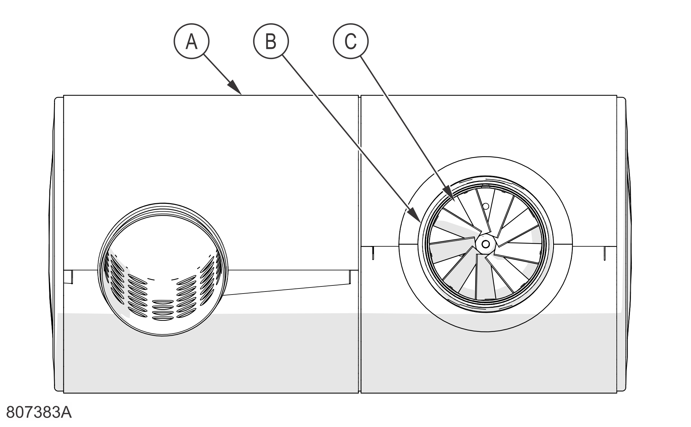
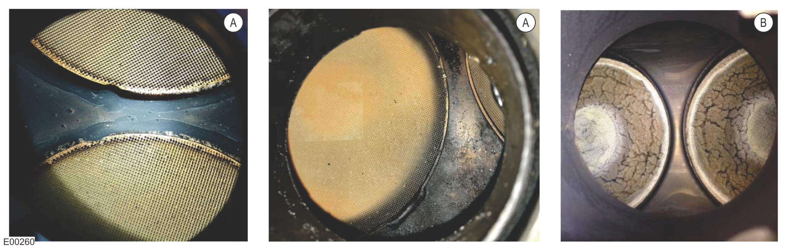
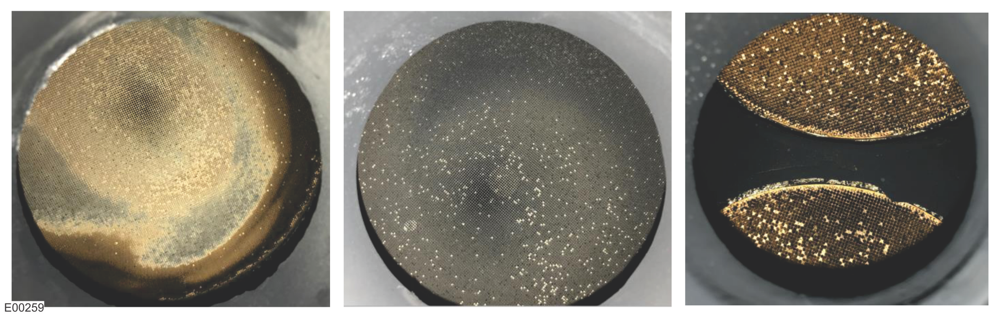

SPN-11738-31 / DTC-2DDA-1F
SCR Catalyst Efficiency Lower than First NOx Production Threshold Level
Note
Because this fault causes inducement, it is necessary to perform the Inducement Unlock/Counter Reset once the fault has been resolved. Contact the Tigercat Industries Service Department if needed.
Note
This machine may be equipped with an FPT DEF tank, a KUS DEF tank (1st Gen), or a KUS DEF tank (2nd Gen). Check which tank is equipped before starting troubleshooting. Refer to Identifying the DEF Tank Manufacturer for more information.
Fault Description:
The instantaneous SCR catalyst efficiency is obtained from the upstream NOx sensor and the downstream NOx sensor. When the electronic control unit (ECU) determines that the SCR catalyst efficiency is lower than expected, this fault occurs.
The NOx sensor detects the amount of nitrogen oxides in the exhaust gases entering the DOC and exiting the SCR. Based on this information, the ECU regulates the amount of DEF (diesel exhaust fluid) to be injected and also measures the efficiency of the DOC and SCR.
Cause:
The ECU calculated that the SCR catalyst efficiency is lower than expected.
Faulty downstream SCR NOx sensor, measures too high values.
Faulty upstream DOC NOx sensor, measures too high values.
Faulty NH3 sensor, measures too high values.
Faulty DEF quality sensor, measures too high values with too low DEF concentration at the same time.
Faulty DEF mixture concentration, too low.
Faulty DEF injection quantity, too low.
Faulty DOC and mixing chamber assembly, catalyst contamination (oil or fuel), thermal damage, or mixing chamber damage.
Faulty SCR assembly, catalyst contamination (oil, fuel, or metallic), or thermal damage.
Two NOx sensors
NH3 sensor
DEF quality sensor
DEF supply module filter
DEF supply module
DEF dosing module
DOC
SCR
Verify that the fault is present and active using either the PT-Box tool or LogOn, then retrieve the IQAN clone.
Check the status of the following related faults:
Downstream NOx Sensor: NOx Sensor Detects Not Plausible Values (NOx or Lambda)
Upstream NOx Sensor: Not Ready in Time or Possible Poisoned Sensor (NOx or Lambda Signals)
Downstream NOx Sensor: Signal is a Constant Value
NH3 Sensor Not Mounted in Correct Position
DEF Quality Sensor: DEF Concentration is Out of Range
SPN-5198 / DTC-144E
DEF Quality Sensor Internal Failure (Concentration Value is Higher than Expected)
SPN-9550 / DTC-245E
DEF Quality Sensor Internal Failure (Concentration Value is Lower than Expected)
If any of the listed faults are active, resolve them first and then determine if this fault is also resolved.
If none of the listed faults are active, continue to the next step.
Check the DEF level and DEF mixture concentration.
Visually determine that the DEF quality sensor is fully immersed in DEF.
Use a refractometer to determine the concentration level of the DEF mixture. There should be 28.75–36.25% mixture concentration.
If there is an insufficient level of DEF to adequately cover the DEF quality sensor, or if the DEF mixture concentration is not between 28.75–36.25%, drain the DEF tank. Remove, inspect, and clean the DEF quality sensor (FPT tanks and KUS tanks, 2nd Gen) or DEF sending unit (KUS tanks, 1st Gen) to make sure that the DEF quality sensor cover holes are free of debris. Fill the DEF tank with properly concentrated DEF mixture, then use the PT-Box tool or LogOn to verify that the fault is resolved.
If there is a sufficient level of DEF to adequately cover the DEF quality sensor and the DEF mixture concentration is between 28.75–36.25%, continue to the next step.
Check the DEF system for pressure, leaks, and quantity.
Remove the DEF dosing module from the DOC.
Using the PT-Box tool or LogOn, perform a Urea Dosing System Test (UDST). During the test, record DEF system pressure, capture the injection pattern on a piece of cardboard, and visually check for any DEF system leakage. There should be 9.00–11.00 bar (130.50–159.50 psi) before injection, the delivery pattern must look even, and there should be no signs of DEF system leakage.
While the dosing module is removed, use the PT-Box tool or LogOn to perform a Urea Dosing Leakage Check (UDLC) and Urea Dosing Valve Check (UDVC) (300–360 ml).
If the pressure is out of specification, the spray pattern is not even, or leakage is seen, clean, repair, or replace system components as required.
If the pressure is within specification, the spray pattern is even, and leakage is not seen, leave the dosing module disconnected and continue to the next step.
Check the condition of the DEF mixing chamber in the DOC.

A
DOC
B
DOC Outlet
C
Mixer Tube
Visually inspect the DEF and exhaust gas mixing chamber, through the dosing module mounting hole, for large urea deposits (at least 25% of the surface is blocked) or damage.
If large deposits or damage is discovered, clean, repair, or replace the DOC assembly as required.
If no large deposits or damage is discovered, install the dosing module and continue to the next step.
Check the condition of the DOC catalyst.
Remove the exhaust tube at the DOC inlet and outlet and visually inspect the catalyst for substrate contamination or damage.
If substrate contamination or damage exists, replace the DOC assembly.
If oil contamination was found, perform the Engine Oil Consumption procedure.
If substrate contamination or damage does not exist, continue to the next step.
Check the condition of the SCR catalyst.
Remove the exhaust tube at the SCR inlet and outlet and visually inspect the catalyst for substrate contamination or thermal damage:

Examples of Thermal Damage in the SCR
A
Discolouration along the perimeter
B
Cracking (extreme case)
Check for burn discolouration marks along the outer perimeter of the SCR (thermal damage).
Check for cracking on the catalyst monolith ring at the outlet (extreme thermal damage).

Examples of Oil Contamination in the SCR
Check for dark, soot-like buildup coating the surface of the SCR (oil contamination)
If substrate contamination or damage exists, replace the SCR assembly.
If oil contamination was found, perform the Engine Oil Consumption procedure.
If substrate contamination or damage does not exist, continue to the next step.
Check the correct operation of both NOx sensors, following the Test the NOx Sensor procedure.
If the sensors are working correctly, continue to Step 10.
If the sensors are not working correctly, continue to the next step.
Replace the downstream NOx sensor, then use the PT-Box or LogOn to perform the Component Replacement > Replace NOx Downstream Sensor procedure.
Replace the upstream NOx sensor, use the PT-Box or LogOn to perform the Component Replacement > Replace NOx Upstream Sensor procedure, and then use the PT-Box or LogOn to verify that the fault has been resolved.
If the fault has been resolved, use the PT-Box tool or LogOn to perform the Inducement Unlock/Counter Reset, then return the machine to service.
If the fault is not resolved, use the PT-Box tool or LogOn to retrieve stored engine data, contact the Tigercat Industries Service Department for more help, and continue to the next step.
Run the machine until the exhaust temperature reaches 350°C (662°F), then use the PT-Box tool or LogOn to data log for 20 minutes while monitoring the values.
Record the following parameters and save the data log as an Excel file:
PT-Box Parameter Description
LogOn Parameter Description
Engine Revolutions
Engine Speed
Duty Cycle: AdBlue Pump Control
SCR Urea Pump Motor Duty Cycle
AdBlue Pressure Sensor
SCR Urea Pump Pressure
Exhaust Gas Temperature at the Particulate Filter Inlet (DPF) – 1
DOC Temperature Upstream
Exhaust Gas Temperature Upstream of the Catalyst (SCR) – 2
SCR Catalyst Temperature Upstream
Exhaust Gas Temperature Downstream of the Catalyst (SCR) – 3
SCR Catalyst Temperature Downstream
NOx Concentration Upstream Catalyst (DOC)
Upstream NOx Concentration (Before DOC)
NOx Concentration Downstream the Catalyst (SCR)
Downstream NOx Concentration (After SCR)
NH3 Concentration After Catalyst
NH3 Concentration (After SCR)
Measured Catalyst Efficiency
Measured Filtered Catalyst Efficiency
After the data log is complete, submit the results to the Tigercat Industries Service Department for an efficiency calculation.